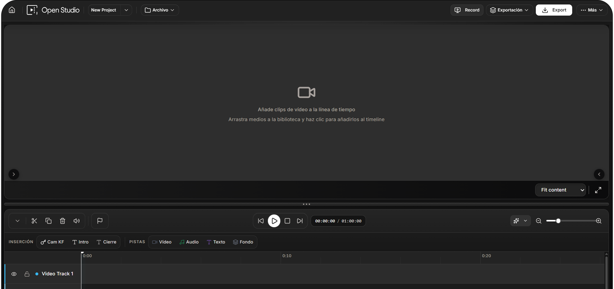

Open Studio is an open source video editor with a real multi-track timeline, an AI-assisted shorts pipeline and a desktop app for Windows, macOS and Linux. Edit in the browser, render locally, ship anywhere.
Anade clips de video a la linea de tiempo
Arrastra medios a la biblioteca y haz clic para anadirlos al timeline
A precise editor, a shorts pipeline and a desktop app, all sharing the same project model and the same minimal UI.
Video, audio, text and image lanes with split, trim, ripple, slip and snap. Frame-accurate playhead, keyframes and an inspector for every clip.
FastAPI service with a Redis-backed queue analyzes long videos and proposes vertical shorts you can edit, caption and publish from the same project.
Electron build with context isolation and a controlled IPC bridge. Open projects offline, persist locally, ship signed installers per OS.
A direct screenshot of Open Studio. Topbar, transport, INSERCION and PISTAS tabs and a real multi-track timeline live in the same window.

Open Studio ships the modules a real NLE workflow needs. Each one consumes the same tokens and shared UI primitives.
Multi-track lanes, frame-accurate playhead, snap, split at playhead, trim in/out, ripple and selection groups.
Inspector for transform, opacity and effects with keyframe tracks and easing curves per parameter.
Blur, color, distortion, stylize and lighting presets with cross-clip transitions and live preview.
Master gain, buses and ducking configuration, ready to drive a deterministic mixdown on export.
Waveform, vectorscope and histogram surface in a dedicated panel for color decisions.
Angle selection and proxy workflow scaffolding for heavy footage on lighter machines.
Caption clips on a dedicated track with quick-add at playhead and styling controls.
Analyze long videos, propose short candidates and push them back into the editor as clips.
Server pipeline for AI-assisted generation, queued through Redis with progress reporting.
Record screen, camera and audio in the browser, then drop the take straight into the timeline.
Queue multiple export jobs from the same project and watch their state from the UI.
MP4, WebM and animated GIF via FFmpeg.wasm, plus single-frame image export from the playhead.
The Clip Generator analyses your master timeline and proposes 9:16 short candidates with smart framing. Edit, caption and export them without leaving the project, or queue them through the AI Shorts service.
No installer required to start. Pick the runtime you want; the project file travels with you.
Drag and drop video, audio and images, or record your screen and camera straight into the asset library.
Stack tracks, trim and split, add transitions, color and effects, animate with keyframes, balance audio in the Audio Pro panel.
Export MP4, WebM or GIF locally with FFmpeg.wasm, or send the project to the AI Shorts service for batch processing.
Web, desktop and shorts service share the same project model and the editorial UI defined in docs/OPEN-STUDIO-DESIGN-SYSTEM.md.
Next.js App Router with feature-sliced architecture, Zustand stores, FFmpeg.wasm engine and the shared UI under shared/components/ui.
--os-* tokensElectron 37 with context isolation and a controlled IPC bridge. Wraps the same web build into signed installers per OS.
FastAPI app with a Redis-backed queue and a worker that runs the analyze/generate pipeline for the Clip Generator and AI Shorts panels.
Different editors, different trade-offs. Open Studio aims to combine the openness of Kdenlive with the ergonomics of a modern web app.
| Compared to | Open Studio advantage |
|---|---|
| CapCut | Open source, self-hosted, no account required, fully extensible. |
| Kdenlive | Runs in the browser, ships a cross-platform desktop app, modern editor UI. |
| DaVinci Resolve | Lightweight web interface, no install required to start, free without limits. |
| Generic online editors | Works offline on the desktop, local project storage, MIT-licensed. |
The desktop app wraps the same editor as the web. Per-OS artifacts are built and signed in CI.
All artifacts and history live on GitHub Releases.
Open Studio is MIT-licensed and built in the open. Read the architecture docs, follow the contributor guide and ship a feature this week.
No account · No telemetry · Local-first export
From the timeline you trust to the desktop app you control. Open the editor and ship a video this week.